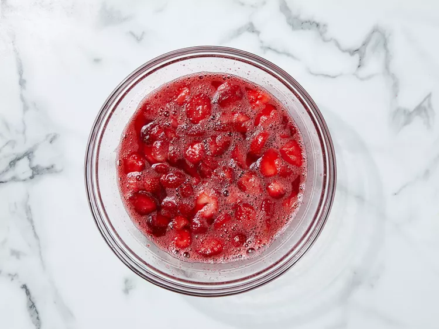

Directions
Step 1
Gather ingredients, and preheat the oven to 350 degrees F (175 degrees C).
Step 2
Mix together pretzels, melted butter, and 4 1/2 tablespoons sugar in a medium bowl until well combined. Press into the bottom of a 9x13-inch dish.

Step 3
Press into the bottom of a 9x13 inch pan. Bake for 10 minutes, or until lightly toasted. Set aside to cool completely.

Step 4
In a medium bowl, beat the sugar and cream cheese until smooth.

Step 5
Fold in whipped topping and spread evenly over the cooled crust. Refrigerate until set, about 30 minutes.

Step 6
Stir together boiling water and gelatin mix in a second large bowl. Mix in frozen strawberries; stir until thawed.
Step 7
Pour over cream cheese mixture in the dish. Refrigerate until completely chilled, at least 1 hour.

Step 8
Refrigerate until completely chilled, at least 1 hour. Slice and enjoy!